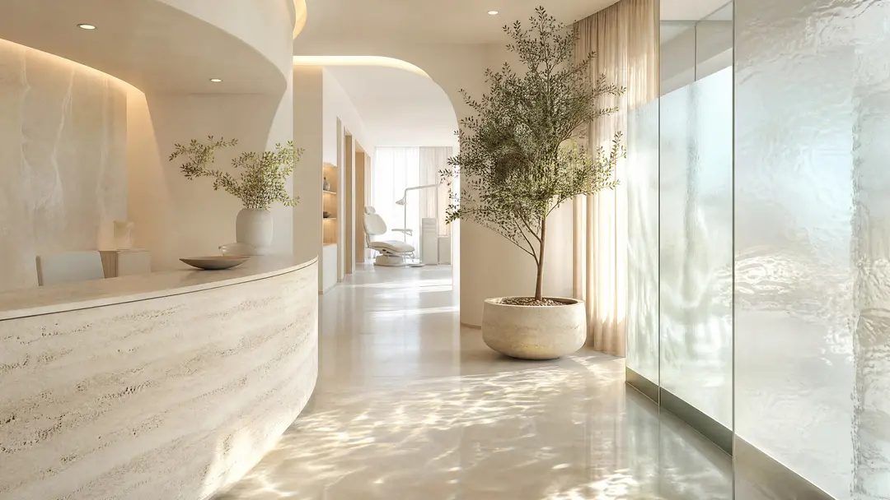
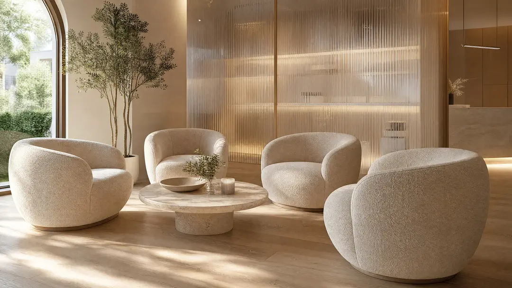
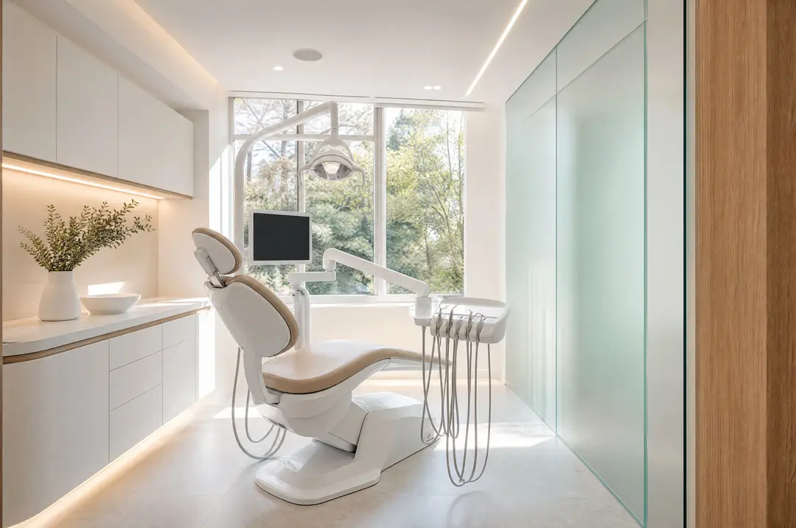
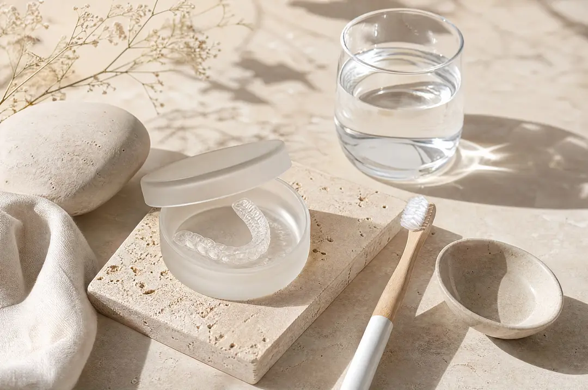

Neue Patientinnen und Patienten willkommen
Ein Lächeln, das sich nach Ihnen anfühlt.
Ästhetische Zahnmedizin in München. Beratung ohne Druck, Behandlung mit Zeit und einem Team, das zuhört.
Schön, gesund und ganz Sie selbst.
Sechs Schwerpunkte, ein Anspruch: Wir behandeln nur, was Ihnen wirklich guttut, und erklären vorher, warum.
-
Unsichtbare Aligner
Zähne sanft ausrichten mit transparenten Schienen. Vorab sehen Sie Ihr Ergebnis als 3D-Simulation.
Dauer6–12 Monate
-
Bleaching
Schonend aufhellen in der Praxis oder mit Ihrer eigenen Schiene für zu Hause.
Dauer1–2 Termine
-
Veneers
Hauchdünne Keramikschalen für Form und Farbe, gefertigt im Meisterlabor in München.
Dauer2–3 Termine
-
Prophylaxe
Professionelle Zahnreinigung mit Zeit, Ruhe und Tipps, die zu Ihrem Alltag passen.
Dauer60 Minuten
-
Implantate
Fester Zahnersatz, der sich anfühlt wie ein eigener Zahn. Geplant mit digitalem Volumentomogramm.
Dauernach Plan
-
Sanfte Behandlung
Für alle, die Respekt vor dem Zahnarzt haben: mehr Zeit, klare Absprachen, auf Wunsch Lachgas.
Dauerimmer
Wie hell darf es werden?
Zahnfarben werden nach einer Farbskala bestimmt. Schieben Sie den Regler und sehen Sie, wie ein Bleaching typischerweise wirkt: meist zwei bis vier Stufen heller, immer natürlich.
A3 A1
Beispielhafte Darstellung. Das tatsächliche Ergebnis hängt von Ihren Zähnen ab und wird vorher gemeinsam besprochen.
In drei Schritten zu Ihrem Lächeln.
- 01
Kennenlernen
Eine halbe Stunde nur für Ihre Fragen. Wir schauen gemeinsam, was Sie sich wünschen und was medizinisch sinnvoll ist.
- 02
Plan & Vorschau
Mit 3D-Scan statt Abdruckmasse. Sie sehen Ihr mögliches Ergebnis, bevor irgendetwas passiert, und bekommen einen schriftlichen Plan.
- 03
Behandlung
In Ruhe, mit klaren Absprachen und Pausen, wann immer Sie möchten. Danach Nachsorge, bis alles sitzt.
Ihr Termin, in einer Minute.
Behandlung, Tag und Uhrzeit wählen. Wir bestätigen innerhalb eines Werktags.
- Termine ab 8 Uhr und bis 19 Uhr
- Erinnerung per SMS oder E-Mail
- Kostenlose Absage bis 24 Stunden vorher

Hell, ruhig und mitten in der Stadt.
Fünf Behandlungsräume mit Tageslicht, eine Lounge statt Wartezimmer und ein Team aus acht Menschen, die sich Zeit nehmen.
- Sprechzeiten
- Mo–Do 8–19 Uhr, Fr 8–15 Uhr
- Anfahrt
- U-Bahn Marienplatz, 3 Minuten zu Fuß
- Sprachen
- Deutsch, Englisch, Italienisch


Was Patienten sagen könnten.
Beispielstimmen, frei erfunden für dieses Demo-Projekt.
„Zum ersten Mal habe ich mich beim Zahnarzt nicht gehetzt gefühlt. Jeder Schritt wurde erklärt.“
Patientin, Aligner-Behandlung (Beispiel)
„Die Vorschau am Bildschirm hat mir die Entscheidung leicht gemacht. Genau so sieht es jetzt aus.“
Patient, Veneers (Beispiel)
„Online gebucht, am nächsten Morgen um halb neun drangekommen. Perfekt vor der Arbeit.“
Patientin, Prophylaxe (Beispiel)
Häufige Fragen.
Übernimmt die Krankenkasse die Kosten?
Viele Leistungen wie Prophylaxe oder Implantate werden teilweise erstattet, ästhetische Behandlungen meist nicht. Wir erstellen Ihnen vorab einen schriftlichen Heil- und Kostenplan zum Einreichen.
Tut Bleaching weh?
In der Regel nicht. Manche spüren für ein bis zwei Tage empfindliche Zähne. Wir prüfen vorher, ob Zahnfleisch und Füllungen geeignet sind.
Wie lange dauert eine Aligner-Behandlung?
Je nach Ausgangslage sechs bis zwölf Monate. Die Schienen wechseln Sie zu Hause, alle sechs bis acht Wochen sehen wir uns zur Kontrolle.
Ich habe große Angst vor dem Zahnarzt. Was nun?
Sagen Sie es uns bei der Buchung. Wir planen mehr Zeit ein, vereinbaren ein Handzeichen für Pausen und erklären vorher jeden Schritt.
Kann ich auch früh morgens oder abends kommen?
Ja. Montag bis Donnerstag haben wir von 8 bis 19 Uhr geöffnet, freitags bis 15 Uhr.